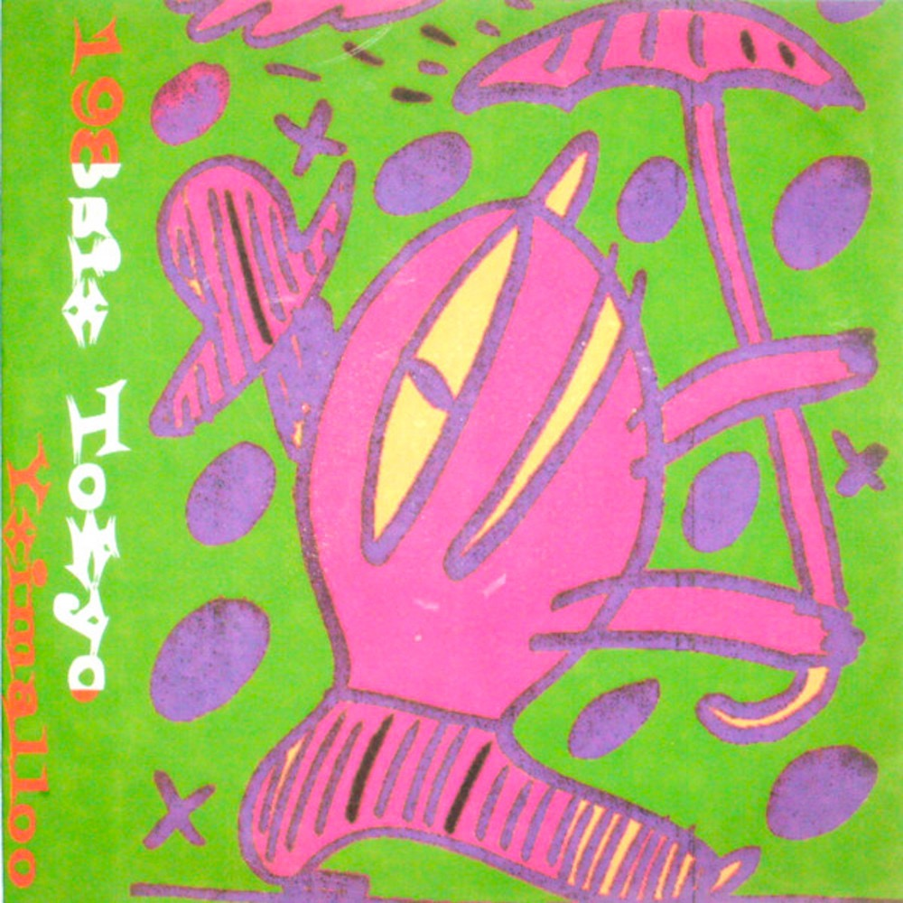

AKOMUN / NetEase Test

198six Tokyo / Yximalloo
测试1：music.163.com/album?id=156069831
测试2：y.music.163.com/m/album?id=156069831
测试3：music.163.com/#/album?id=156069831
测试4：先尝试 App，再 fallback 网页
测试顺序：先点1，再点2，再点3。
如果某个能直接打开网易云 App，就用那个。
测试4 会先尝试唤起网易云 App，失败后 1.2 秒跳网页。